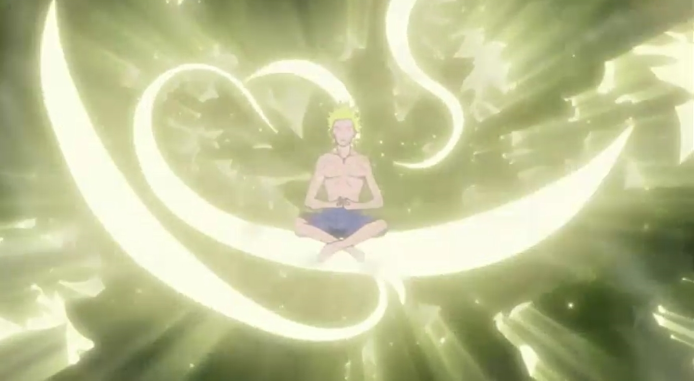

"La importancia del Auto-conocimiento"
Una de los enigmas mas grandes para el ser humano en su busqueda de la felicidad
En esta seccion nos adentraremos en conceptos basicos para ayudar a auto-conocernos, para abrir nuevas puertas y para descubrir un nuevo amanecer.
Leer mas